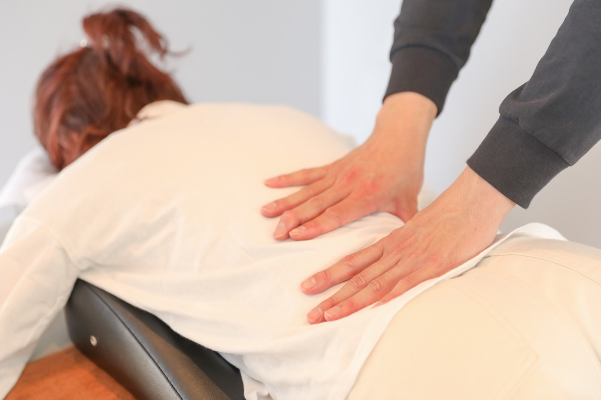
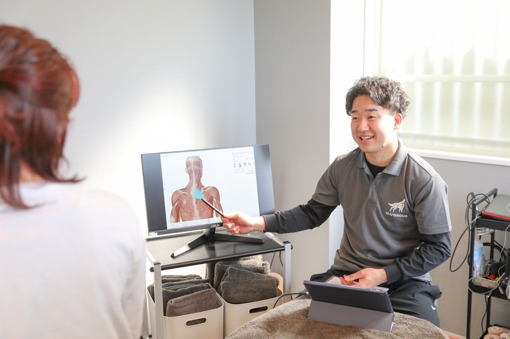
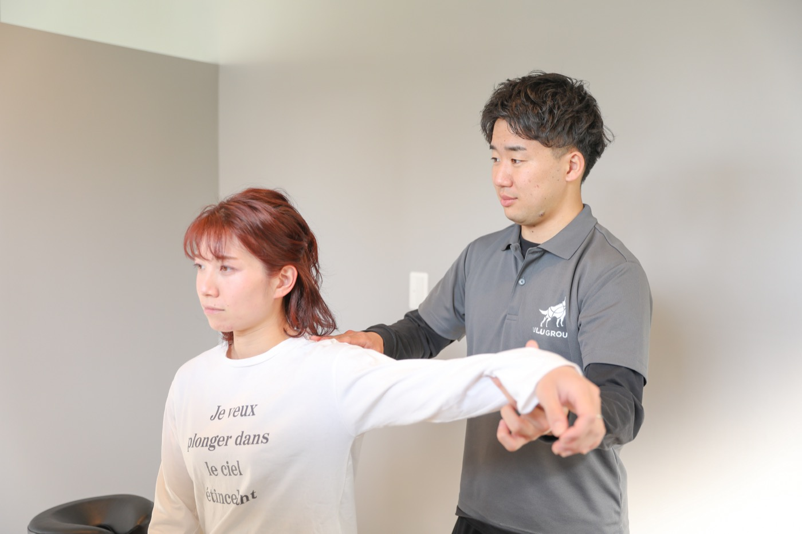
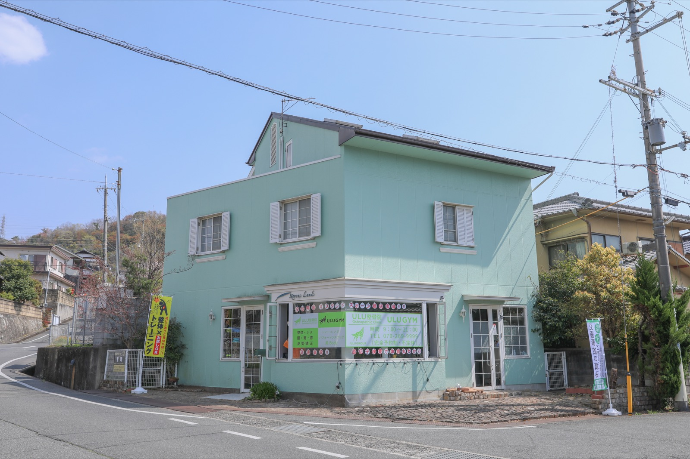

私たちの想い
その先にある、あなたらしい毎日へ。
腰を気にせず、
また好きなことを。
旅行や散歩、スポーツ。やりたいことを楽しめる毎日を目指して、今の身体に合う方法を考えます。
姫路市田寺東で、整体と運動をひとつの場所で。
旅行も、散歩も、好きなスポーツも。腰を気にせず楽しめる毎日を、一緒に目指しませんか。
整体と、ご自身で取り組める運動。身体の状態と目標に合わせた方法をご提案します。

その先にある、あなたらしい毎日へ。
旅行や散歩、スポーツ。やりたいことを楽しめる毎日を目指して、今の身体に合う方法を考えます。
どんな場面で、どのように気になるのか。うまく説明できなくても大丈夫です。まずはお話を聞かせてください。
今の身体を確かめ、整体と運動をご提案。日々の気がかりから、これから続けたい趣味まで、一人ひとりに合う方法を考えます。

いつから、どのような動きで気になるのか。お仕事や家事、運動の習慣、これまでの経過も伺います。

立った姿勢や、無理のない範囲での前かがみなどを確認。股関節や背中なども含めてお伝えします。

状態に合わせて施術を行い、必要に応じて日常の身体の使い方や、ご自宅でできる体操をお伝えします。
施術や運動の内容は、身体の状態に合わせてご案内します。２回目以降は都度払い・月会費などのプランがあります。継続料金を見る →
※休日・時間外は事前相談制です。通常料金に特別対応費が加算されます。
メニューが決まっていない方もご相談いただけます。
初回の空き枠を見る ↗ご希望の日時を予約ページからお選びください。

ULU整骨院 ULU GYMは、整体とパーソナルトレーニングを行う施設です。身体の不調から、運動を始めたい方の身体づくりまで、一人ひとりの状態と目標に合わせてご提案します。
運動に慣れていない方も、ご自身の経験や体力に合った内容をご相談いただけます。
自身の野球でのケガと整骨院での施術経験をもとに、一人ひとりのお悩みと目標に向き合っています。
「5年後、今より元気なカラダに」ご希望の日時をお選びください。
困っていることや生活習慣、目標を伺います。
姿勢や動きを確認し、状態に合わせて施術などを行います。
進め方や通い方をご案内し、次回の予約もご相談いただけます。

ULU整骨院 ULU GYM 外観まずはLINEで現在の様子をお知らせください。状態によっては、先に医療機関での確認をご案内する場合があります。
迷う場合は、LINEでお悩みやご希望をお知らせください。身体の状態と目的を伺い、合う内容をご提案します。
運動経験や体力、身体の状態に合わせた内容をご提案します。運動に慣れていない方もご相談ください。
カウンセリングを含めて60〜90分程度です。時間に余裕をもってお越しください。
Tシャツやジャージなど、動きやすい服装をご持参ください。
はい。子ども同伴でお越しいただけます。ご予約時にお知らせください。
はい。店舗前と近隣に、計2台分の駐車場があります。
はい。クレジットカード・電子決済に対応しています。
整体のことも、身体を動かすことも。
今の状態に合わせた進め方をご相談いただけます。
完全予約制です。ご希望の日時を予約ページからお選びください。